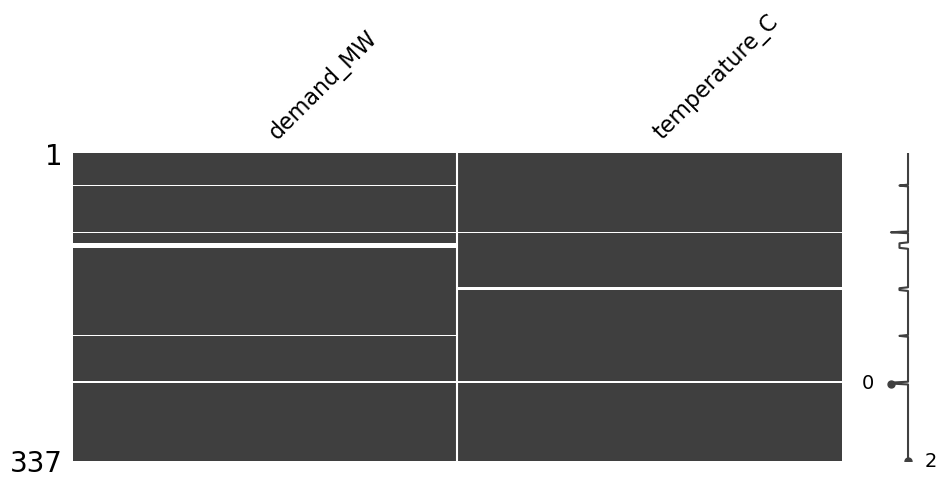
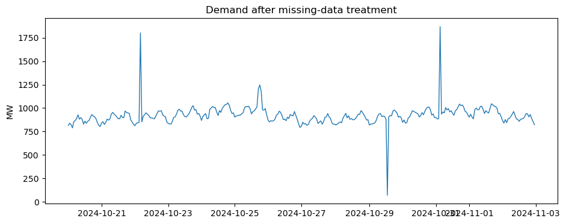
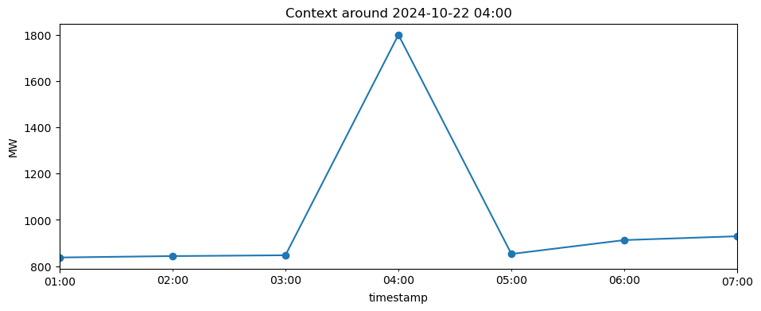
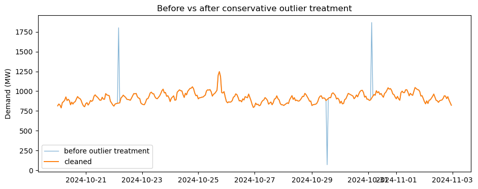

LAB: ⚡ Data Cleaning#
Datetime · Missing Data · Outliers#
In this practical, you receive a dirty hourly energy dataset and prepare it for forecasting.
The dataset contains realistic data-quality problems:
🕒 datetime parsing and ordering issues,
🌗 a DST transition,
🕳️ missing timestamps and missing values,
🚨 suspicious extreme values,
✅ one unusual but valid demand event.
Goal: finish with a defensible clean_df — not simply a dataset where every suspicious point has been deleted.
Most code is already provided. Your job is to inspect, change small parameters, compare methods, and justify decisions.
🎯 Learning outcomes#
By the end of the lab you should be able to:
distinguish missing timestamps from NaN values;
handle a DST transition without blindly deleting a repeated local hour;
compare several imputation strategies experimentally;
detect outliers with IQR and Z-score rules;
distinguish statistical outliers from likely measurement errors;
critically assess an LLM-generated preprocessing recommendation.
0️⃣ Setup#
Run this cell once. Do not edit it.
Loaded 334 rows and 3 columns.
| timestamp | demand_MW | temperature_C | |
|---|---|---|---|
| 0 | 2024-10-20 10:00:00 | 881.444915 | 6.452522 |
| 1 | 2024-10-20 11:00:00 | 828.518386 | 6.701154 |
| 2 | 2024-10-20 12:00:00 | 861.291569 | 6.731365 |
| 3 | 2024-10-20 13:00:00 | 837.611457 | 7.598482 |
| 4 | 2024-10-20 14:00:00 | 859.629250 | 7.710379 |
1️⃣ Datetime Detective 🕒#
Start with the raw dataset. Do not clean anything yet. First inspect what you actually have.
print(raw_df.dtypes)
print()
display(raw_df[["timestamp", "demand_MW", "temperature_C"]].head(8))
timestamp datetime64[ns]
demand_MW float64
temperature_C float64
dtype: object
| timestamp | demand_MW | temperature_C | |
|---|---|---|---|
| 0 | 2024-10-20 10:00:00 | 881.444915 | 6.452522 |
| 1 | 2024-10-20 11:00:00 | 828.518386 | 6.701154 |
| 2 | 2024-10-20 12:00:00 | 861.291569 | 6.731365 |
| 3 | 2024-10-20 13:00:00 | 837.611457 | 7.598482 |
| 4 | 2024-10-20 14:00:00 | 859.629250 | 7.710379 |
| 5 | 2024-10-20 15:00:00 | 868.307840 | 7.519997 |
| 6 | 2024-10-20 16:00:00 | 902.727473 | 8.455898 |
| 7 | 2024-10-20 17:00:00 | 931.858566 | 8.198492 |
Task 1.1 — Parse and index the timestamps#
The line is already written for you. Change dayfirst=True to False temporarily and see what happens, then restore the correct setting.
Question: Why is an explicit datetime convention safer than relying on automatic parsing?
df = raw_df.copy()
df["timestamp"] = pd.to_datetime(df["timestamp"], dayfirst=True)
df = df.set_index("timestamp")
print(df.index.dtype)
print("Monotonic before sorting:", df.index.is_monotonic_increasing)
datetime64[ns]
Monotonic before sorting: False
Task 1.2 — Sort before time-series analysis#
Change only the marked line if needed.
# MODIFY / verify this line
df = df.sort_index()
print("Monotonic after sorting:", df.index.is_monotonic_increasing)
print("Repeated local timestamps:", df.index.duplicated().sum())
Monotonic after sorting: True
Repeated local timestamps: 1
Task 1.3 — Explore daily observation counts#
A normal hourly day usually contains 24 observations. Use the dropdown around the DST transition.
Do not assume that 25 observations means bad data.
def show_day_count(day="2024-10-27"):
day = pd.Timestamp(day)
mask = df.index.normalize() == day
day_df = df.loc[mask]
print(f"{day.date()} → {len(day_df)} observations")
if len(day_df):
display(day_df[["demand_MW", "temperature_C"]].head(30))
_days = ["2024-10-26", "2024-10-27", "2024-10-28"]
if WIDGETS_AVAILABLE:
interact(show_day_count, day=_days);
else:
for _d in _days:
show_day_count(_d)
✍️ Checkpoint 1#
Answer in 1–3 sentences each.
Why does 27 October contain 25 hourly observations?
Would
df = df[~df.index.duplicated()]be a safe fix here?What information is missing from a naive local timestamp?
checkpoint_1 = {
"Q1": "",
"Q2": "",
"Q3": "",
}
checkpoint_1
{'Q1': '', 'Q2': '', 'Q3': ''}
🧑🏫 Notes — Checkpoint 1#
25 observations are expected on the autumn DST transition because one local clock hour occurs twice with different UTC offsets.
Blindly dropping duplicated naive timestamps would destroy a valid observation. The better fix is to retain both records and attach
Europe/Tallinn, disambiguating the repeated hour.A naive timestamp does not contain the UTC offset / timezone, so two physically different instants may share the same local clock label.
Task 1.4 — Preserve the DST hour correctly#
Instead of deleting a repeated local hour, attach the correct timezone.
ambiguous="infer" uses the chronological order of the repeated observations to infer the two different UTC offsets.
df.index = df.index.tz_localize("Europe/Tallinn", ambiguous="infer")
print("Timezone:", df.index.tz)
print("Duplicated absolute timestamps:", df.index.duplicated().sum())
print(df.loc["2024-10-27 02:00":"2024-10-27 04:00"].index)
Timezone: Europe/Tallinn
Duplicated absolute timestamps: 0
DatetimeIndex(['2024-10-27 02:00:00+03:00', '2024-10-27 03:00:00+03:00', '2024-10-27 03:00:00+02:00',
'2024-10-27 04:00:00+02:00'],
dtype='datetime64[ns, Europe/Tallinn]', name='timestamp', freq=None)
Task 1.5 — Find missing timestamps#
.isna() cannot detect a row that does not exist. Compare both checks.
print("NaN values currently visible:")
display(df[["demand_MW", "temperature_C"]].isna().sum().to_frame("NaN count"))
expected_index = pd.date_range(
start=df.index.min(),
end=df.index.max(),
freq="h",
tz="Europe/Tallinn"
)
missing_timestamps = expected_index.difference(df.index)
print("Missing timestamps:", len(missing_timestamps))
print(missing_timestamps)
NaN values currently visible:
| NaN count | |
|---|---|
| demand_MW | 8 |
| temperature_C | 3 |
Missing timestamps: 3
DatetimeIndex(['2024-10-23 14:00:00+03:00', '2024-10-30 09:00:00+02:00', '2024-10-30 10:00:00+02:00'], dtype='datetime64[ns, Europe/Tallinn]', freq=None)
Task 1.6 — Make the timeline complete#
Reindexing inserts missing rows. After this step, missing timestamps become visible as NaN values.
df = df.reindex(expected_index)
df.index.name = "timestamp"
print("Rows after reindexing:", len(df))
print("Remaining missing timestamps:", len(expected_index.difference(df.index)))
display(df[["demand_MW", "temperature_C"]].isna().sum().to_frame("NaN count"))
Rows after reindexing: 337
Remaining missing timestamps: 0
| NaN count | |
|---|---|
| demand_MW | 11 |
| temperature_C | 6 |
2️⃣ Missing Data Detective 🕳️#
Now the time axis is structurally complete. Next, investigate where and how values are missing.
missing_summary = pd.DataFrame({
"missing_count": df[["demand_MW", "temperature_C"]].isna().sum(),
"missing_percent": 100 * df[["demand_MW", "temperature_C"]].isna().mean(),
})
missing_summary["missing_percent"] = missing_summary["missing_percent"].round(2)
display(missing_summary)
| missing_count | missing_percent | |
|---|---|---|
| demand_MW | 11 | 3.26 |
| temperature_C | 6 | 1.78 |
Task 2.1 — Visualize missingness#
If missingno is installed, use its matrix. Otherwise the fallback plot shows the same idea.
cols = ["demand_MW", "temperature_C"]
if MISSINGNO_AVAILABLE:
msno.matrix(df[cols], figsize=(11, 4))
plt.show()
else:
plt.figure(figsize=(11, 2.5))
plt.imshow(df[cols].isna().T, aspect="auto", interpolation="nearest")
plt.yticks(range(len(cols)), cols)
plt.xlabel("Time index")
plt.title("Missing values (bright = missing)")
plt.show()

Task 2.2 — Find consecutive gaps#
The helper below reports lengths of missing blocks. Change column in the widget/dropdown.
def missing_blocks(series):
m = series.isna()
group = (m != m.shift(fill_value=False)).cumsum()
blocks = []
for _, part in series.groupby(group):
if part.isna().all():
blocks.append({
"start": part.index.min(),
"end": part.index.max(),
"hours": len(part),
})
return pd.DataFrame(blocks)
def show_missing_blocks(column="demand_MW"):
out = missing_blocks(df[column])
print(f"Missing blocks in {column}: {len(out)}")
display(out if len(out) else pd.DataFrame({"message": ["No missing blocks"]}))
if WIDGETS_AVAILABLE:
interact(show_missing_blocks, column=["demand_MW", "temperature_C"]);
else:
show_missing_blocks("demand_MW")
show_missing_blocks("temperature_C")
✍️ Checkpoint 2#
Is a one-hour gap equivalent to a six-hour gap for imputation?
Which is more dangerous for a forecasting dataset: a missing value you can see, or a missing timestamp you fail to detect?
Would you use the same imputation rule for demand and temperature? Why/why not?
checkpoint_2 = {
"Q1": "",
"Q2": "",
"Q3": "",
}
checkpoint_2
{'Q1': '', 'Q2': '', 'Q3': ''}
🧑🏫 Notes — Checkpoint 2#
A 1-hour gap is usually much safer for local interpolation than a 6-hour or 8-hour block.
A missing timestamp is especially dangerous because ordinary
isna()checks cannot see a row that is absent.Variables have different dynamics: temperature is comparatively smooth, while demand has sharper behavioural peaks. A method should match the variable and gap length.
🧪 Imputation Playground#
Instead of guessing, we can hide known values deliberately and see how well each method reconstructs them.
The benchmark hides six consecutive demand observations whose true values are known internally.
def impute_series(s, method):
out = s.copy()
if method == "Forward fill":
return out.ffill()
if method == "Backward fill":
return out.bfill()
if method == "Mean":
return out.fillna(out.mean())
if method == "Median":
return out.fillna(out.median())
if method == "Linear interpolation":
return out.interpolate(method="linear")
if method == "Time interpolation":
return out.interpolate(method="time")
if method == "Hourly median":
hourly = out.groupby(out.index.hour).median()
fill = pd.Series(out.index.hour, index=out.index).map(hourly)
return out.fillna(fill)
raise ValueError(method)
# A clean two-day window, away from DST and injected sensor errors.
_benchmark = _truth.set_index("timestamp").loc["2024-10-25":"2024-10-26", "demand_MW"].copy()
_gap_start = pd.Timestamp("2024-10-26 03:00")
_gap_end = pd.Timestamp("2024-10-26 08:00")
_gap_mask = (_benchmark.index >= _gap_start) & (_benchmark.index <= _gap_end)
# Wider reference used by the hourly-median method.
_reference = _truth.set_index("timestamp")["demand_MW"].copy()
_reference = _reference[~_reference.index.duplicated(keep="first")]
def evaluate_imputation(method="Time interpolation"):
observed = _benchmark.copy()
truth_gap = observed.loc[_gap_mask].copy()
observed.loc[_gap_mask] = np.nan
if method == "Hourly median":
hourly = _reference.groupby(_reference.index.hour).median()
imputed = observed.copy()
fill = pd.Series(imputed.index.hour, index=imputed.index).map(hourly)
imputed = imputed.fillna(fill)
else:
imputed = impute_series(observed, method)
pred = imputed.loc[_gap_mask]
rmse = float(np.sqrt(np.mean((pred.to_numpy() - truth_gap.to_numpy()) ** 2)))
plt.figure(figsize=(11, 4))
plt.plot(_benchmark.index, _benchmark.values, label="true series", alpha=0.45)
plt.plot(observed.index, observed.values, marker="o", ms=3, label="observed")
plt.plot(pred.index, pred.values, marker="o", lw=2.5, label=f"imputed: {method}")
plt.axvspan(_gap_start, _gap_end, alpha=0.12)
plt.ylabel("Demand (MW)")
plt.title(f"{method} — hidden-gap RMSE = {rmse:.1f} MW")
plt.legend()
plt.show()
return rmse
_methods = [
"Forward fill", "Backward fill", "Mean", "Median",
"Linear interpolation", "Time interpolation", "Hourly median"
]
if WIDGETS_AVAILABLE:
interact(evaluate_imputation, method=_methods);
else:
evaluate_imputation("Time interpolation")
Task 2.3 — Compare all methods numerically#
Run the cell. Then change BEST_METHOD_GUESS to your preferred method before looking at the sorted table.
BEST_METHOD_GUESS = "Time interpolation" # change if you want
_scores = {}
for method in _methods:
observed = _benchmark.copy()
truth_gap = observed.loc[_gap_mask].copy()
observed.loc[_gap_mask] = np.nan
if method == "Hourly median":
hourly = _reference.groupby(_reference.index.hour).median()
fill = pd.Series(observed.index.hour, index=observed.index).map(hourly)
pred_series = observed.fillna(fill)
else:
pred_series = impute_series(observed, method)
pred = pred_series.loc[_gap_mask]
_scores[method] = np.sqrt(np.mean((pred.to_numpy() - truth_gap.to_numpy()) ** 2))
score_table = (
pd.Series(_scores, name="RMSE_MW")
.sort_values()
.round(2)
.to_frame()
)
score_table["your_guess"] = score_table.index == BEST_METHOD_GUESS
display(score_table)
| RMSE_MW | your_guess | |
|---|---|---|
| Hourly median | 10.52 | False |
| Linear interpolation | 18.85 | False |
| Time interpolation | 18.85 | True |
| Median | 45.21 | False |
| Forward fill | 55.53 | False |
| Mean | 59.95 | False |
| Backward fill | 62.98 | False |
🧑🏫 Notes — Imputation benchmark#
There is no universal winner. In this deterministic dataset, local interpolation methods usually perform well because the hidden six-hour region sits on a smooth part of the daily demand curve. The important learning objective is that students measure reconstruction error instead of defending a method only by intuition.
Useful discussion point: a method that wins on this synthetic gap may not win on a holiday, outage, morning ramp, or multi-day gap.
🤖 LLM checkpoint — imputation#
Ask an LLM something like:
I have hourly electricity demand data with a six-hour missing block from 03:00–08:00. Which imputation method should I use: forward fill, interpolation, global mean/median, or hour-of-day median? Explain the assumptions behind your choice.
Then compare the recommendation with your empirical benchmark.
Important: the LLM does not know the hidden ground truth. Your experiment does.
llm_imputation_review = {
"LLM_recommendation": "",
"best_empirical_method": score_table.index[0],
"agree_or_disagree": "",
"reason": "",
}
llm_imputation_review
{'LLM_recommendation': '',
'best_empirical_method': 'Hourly median',
'agree_or_disagree': '',
'reason': ''}
Task 2.4 — Create an imputed working copy#
For this lab we use a hybrid rule:
temperature → time interpolation;
demand → time interpolation for short gaps, then hour-of-day median for anything still missing.
You may later argue for a different policy.
work = df.copy()
# Temperature is usually smooth enough for local interpolation over short gaps.
work["temperature_C"] = work["temperature_C"].interpolate(method="time", limit=6, limit_direction="both")
# Demand: interpolate only short gaps first.
work["demand_MW"] = work["demand_MW"].interpolate(method="time", limit=2, limit_direction="both")
# Fill any remaining demand gaps with a robust hour-of-day profile.
hourly_median = work.groupby(work.index.hour)["demand_MW"].median()
hourly_fill = pd.Series(work.index.hour, index=work.index).map(hourly_median)
work["demand_MW"] = work["demand_MW"].fillna(hourly_fill)
print(work[["demand_MW", "temperature_C"]].isna().sum())
demand_MW 0
temperature_C 0
dtype: int64
3️⃣ Outlier Detective 🚨#
Now all required values exist, but some measurements are suspicious.
Remember:
statistical outlier ≠ measurement error
display(work[["demand_MW", "temperature_C"]].describe().T)
fig, ax = plt.subplots(figsize=(11, 4))
ax.plot(work.index, work["demand_MW"], lw=1)
ax.set_title("Demand after missing-data treatment")
ax.set_ylabel("MW")
plt.show()
| count | mean | std | min | 25% | 50% | 75% | max | |
|---|---|---|---|---|---|---|---|---|
| demand_MW | 337.0 | 922.512817 | 105.226249 | 70.677764 | 878.863428 | 916.991486 | 958.433369 | 1867.672425 |
| temperature_C | 337.0 | 5.991432 | 2.323087 | 1.083872 | 3.928571 | 5.980312 | 7.997687 | 10.438171 |

Task 3.1 — IQR detector#
The standard rule uses k = 1.5. Change it to 1.0, 2.0 and 3.0 and observe how the number of flagged points changes.
def iqr_mask(series, k=1.5):
q1 = series.quantile(0.25)
q3 = series.quantile(0.75)
iqr = q3 - q1
lower = q1 - k * iqr
upper = q3 + k * iqr
return (series < lower) | (series > upper), lower, upper
mask_iqr, lower_iqr, upper_iqr = iqr_mask(work["demand_MW"], k=1.5)
print("IQR flags:", int(mask_iqr.sum()))
print(f"Bounds: {lower_iqr:.1f} .. {upper_iqr:.1f} MW")
IQR flags: 6
Bounds: 759.5 .. 1077.8 MW
Task 3.2 — Z-score detector#
Change the threshold from 3.0 to 2.0 and 4.0. Why do the results differ from IQR?
def zscore_mask(series, threshold=3.0):
z = (series - series.mean()) / series.std(ddof=0)
return z.abs() > threshold
mask_z = zscore_mask(work["demand_MW"], threshold=3.0)
print("Z-score flags:", int(mask_z.sum()))
print("Flagged by both:", int((mask_iqr & mask_z).sum()))
Z-score flags: 4
Flagged by both: 4
🎚️ Outlier Threshold Playground#
Move the threshold and compare IQR with Z-score visually.
def outlier_playground(method="IQR", threshold=1.5):
s = work["demand_MW"]
if method == "IQR":
mask, _, _ = iqr_mask(s, k=float(threshold))
else:
mask = zscore_mask(s, threshold=float(threshold))
plt.figure(figsize=(11, 4))
plt.plot(s.index, s.values, lw=1, label="demand")
plt.scatter(s.index[mask], s[mask], s=38, label="flagged")
plt.ylabel("MW")
plt.title(f"{method}, threshold={threshold:.1f} → {int(mask.sum())} flagged points")
plt.legend()
plt.show()
if WIDGETS_AVAILABLE:
method_widget = widgets.Dropdown(options=["IQR", "Z-score"], value="IQR", description="Method:")
threshold_widget = widgets.FloatSlider(value=1.5, min=1.0, max=4.0, step=0.25, description="Threshold:", continuous_update=False)
interact(outlier_playground, method=method_widget, threshold=threshold_widget);
else:
outlier_playground("IQR", 1.5)
Task 3.3 — Inspect suspicious points in context#
A detector should generate candidates, not make the final decision automatically.
Use the table and local windows below. Pay attention to whether an extreme point is isolated or supported by neighbouring values.
candidate_mask, _, _ = iqr_mask(work["demand_MW"], k=1.5)
candidates = work.loc[candidate_mask, ["demand_MW", "temperature_C"]].copy()
candidates["z_score"] = ((work.loc[candidate_mask, "demand_MW"] - work["demand_MW"].mean()) / work["demand_MW"].std(ddof=0)).round(2)
display(candidates.sort_values("demand_MW").head(12))
display(candidates.sort_values("demand_MW", ascending=False).head(12))
| demand_MW | temperature_C | z_score | |
|---|---|---|---|
| timestamp | |||
| 2024-10-29 13:00:00+02:00 | 70.677764 | 7.230024 | -8.11 |
| 2024-10-25 19:00:00+03:00 | 1185.101303 | 5.818003 | 2.50 |
| 2024-10-25 17:00:00+03:00 | 1202.683264 | 4.475998 | 2.67 |
| 2024-10-25 18:00:00+03:00 | 1246.965215 | 5.234853 | 3.09 |
| 2024-10-22 04:00:00+03:00 | 1800.982257 | 7.536901 | 8.36 |
| 2024-10-31 03:00:00+02:00 | 1867.672425 | 4.023377 | 9.00 |
| demand_MW | temperature_C | z_score | |
|---|---|---|---|
| timestamp | |||
| 2024-10-31 03:00:00+02:00 | 1867.672425 | 4.023377 | 9.00 |
| 2024-10-22 04:00:00+03:00 | 1800.982257 | 7.536901 | 8.36 |
| 2024-10-25 18:00:00+03:00 | 1246.965215 | 5.234853 | 3.09 |
| 2024-10-25 17:00:00+03:00 | 1202.683264 | 4.475998 | 2.67 |
| 2024-10-25 19:00:00+03:00 | 1185.101303 | 5.818003 | 2.50 |
| 2024-10-29 13:00:00+02:00 | 70.677764 | 7.230024 | -8.11 |
def inspect_window(timestamp, hours=3):
ts = pd.Timestamp(timestamp, tz="Europe/Tallinn")
window = work.loc[ts - pd.Timedelta(hours=hours): ts + pd.Timedelta(hours=hours), ["demand_MW", "temperature_C"]]
display(window)
ax = window["demand_MW"].plot(marker="o", title=f"Context around {timestamp}")
ax.set_ylabel("MW")
plt.show()
# Try changing the timestamp to other suspicious candidates.
inspect_window("2024-10-22 04:00")
| demand_MW | temperature_C | |
|---|---|---|
| timestamp | ||
| 2024-10-22 01:00:00+03:00 | 837.350425 | 9.238771 |
| 2024-10-22 02:00:00+03:00 | 843.445062 | 8.996822 |
| 2024-10-22 03:00:00+03:00 | 847.019641 | 8.805147 |
| 2024-10-22 04:00:00+03:00 | 1800.982257 | 7.536901 |
| 2024-10-22 05:00:00+03:00 | 852.604456 | 7.757307 |
| 2024-10-22 06:00:00+03:00 | 912.675443 | 7.452008 |
| 2024-10-22 07:00:00+03:00 | 929.232233 | 7.205740 |

✍️ Checkpoint 3 — Error or real event?#
Classify at least three suspicious points as:
likely measurement errorpossibly real eventnot enough information
Do not justify a decision only with “the value is outside the IQR”.
outlier_review = pd.DataFrame({
"timestamp": [
"2024-10-22 04:00",
"2024-10-25 18:00",
"2024-10-29 13:00",
"2024-10-31 03:00",
],
"decision": ["", "", "", ""],
"reason": ["", "", "", ""],
})
outlier_review
| timestamp | decision | reason | |
|---|---|---|---|
| 0 | 2024-10-22 04:00 | ||
| 1 | 2024-10-25 18:00 | ||
| 2 | 2024-10-29 13:00 | ||
| 3 | 2024-10-31 03:00 |
🧑🏫 Notes — suspicious points#
Expected classification:
2024-10-22 04:00→ likely measurement error (isolated positive spike)2024-10-25 18:00→ real event / keep (multi-hour elevated demand, locally consistent)2024-10-29 13:00→ likely measurement error (isolated implausibly low dropout-like value)2024-10-31 03:00→ likely measurement error (isolated positive spike)
The important point is that the real event can still be flagged statistically. Context, persistence, domain information, and neighbouring measurements matter.
🤖 LLM checkpoint — preprocessing audit#
Give an LLM this compact report and ask it to propose a cleaning pipeline. Then audit the answer rather than accepting it automatically.
report_for_llm = {
"sampling": "hourly electricity demand + temperature",
"timezone": "Europe/Tallinn",
"DST_day_observations": 25,
"missing_timestamps_found": len(missing_timestamps),
"longest_demand_gap_hours": int(missing_blocks(df["demand_MW"])["hours"].max()),
"IQR_flags_k_1_5": int(mask_iqr.sum()),
"Zscore_flags_3_sigma": int(mask_z.sum()),
}
report_for_llm
{'sampling': 'hourly electricity demand + temperature',
'timezone': 'Europe/Tallinn',
'DST_day_observations': 25,
'missing_timestamps_found': 3,
'longest_demand_gap_hours': 6,
'IQR_flags_k_1_5': 6,
'Zscore_flags_3_sigma': 4}
Suggested prompt:
You are reviewing hourly energy data before demand forecasting. The data has a timezone-aware DST transition, several missing timestamps, a six-hour missing-value block, and extreme values flagged by IQR/Z-score. Propose a preprocessing pipeline. For every destructive action (dropping rows, deleting outliers), state the evidence required before doing it.
Now evaluate the answer.
llm_pipeline_audit = pd.DataFrame({
"LLM suggestion": [
"Delete the repeated DST hour",
"Interpolate every missing block",
"Delete every IQR outlier",
"Sort and validate the time index",
],
"Accept?": ["", "", "", ""],
"Why?": ["", "", "", ""],
})
llm_pipeline_audit
| LLM suggestion | Accept? | Why? | |
|---|---|---|---|
| 0 | Delete the repeated DST hour | ||
| 1 | Interpolate every missing block | ||
| 2 | Delete every IQR outlier | ||
| 3 | Sort and validate the time index |
🧑🏫 Notes — LLM audit#
A reasonable evaluation is:
Suggestion |
Decision |
Why |
|---|---|---|
Delete repeated DST hour |
❌ reject |
it represents two different absolute instants |
Interpolate every missing block |
⚠️ conditional |
acceptable only when gap length and signal dynamics support it |
Delete every IQR outlier |
❌ reject |
statistical extremeness is not evidence of measurement error |
Sort and validate time index |
✅ accept |
structural prerequisite for time-series operations |
Encourage students to challenge any LLM response that performs irreversible cleaning without an evidence criterion.
4️⃣ Build the Final Cleaning Pipeline ✅#
At this point you should have enough evidence to build a defensible pipeline.
The key idea is:
fix structure first (time axis),
handle missingness second,
treat outliers last and conservatively.
def data_quality_report(frame):
numeric = frame[["demand_MW", "temperature_C"]]
iqr_flags, _, _ = iqr_mask(numeric["demand_MW"].dropna(), k=1.5)
return pd.Series({
"rows": len(frame),
"missing_values": int(numeric.isna().sum().sum()),
"duplicate_timestamps": int(frame.index.duplicated().sum()),
"IQR_flags_demand": int(iqr_flags.sum()),
})
print("Current working dataset:")
display(data_quality_report(work).to_frame("value"))
Current working dataset:
| value | |
|---|---|
| rows | 337 |
| missing_values | 0 |
| duplicate_timestamps | 0 |
| IQR_flags_demand | 6 |
Final task#
Create clean_df from work.
For the practical, use the three timestamps you classified as likely sensor errors. Replace only those values with NaN, then reconstruct them locally.
This is intentionally different from deleting every statistical outlier.
clean_df = work.copy()
# EDIT THIS LIST if your evidence led you to a different conclusion.
likely_sensor_errors = [
"2024-10-22 04:00",
"2024-10-29 13:00",
"2024-10-31 03:00",
]
error_index = pd.DatetimeIndex(likely_sensor_errors).tz_localize("Europe/Tallinn")
clean_df.loc[error_index, "demand_MW"] = np.nan
clean_df["demand_MW"] = clean_df["demand_MW"].interpolate(method="time", limit_direction="both")
print("Final quality report:")
display(data_quality_report(clean_df).to_frame("value"))
Final quality report:
| value | |
|---|---|
| rows | 337 |
| missing_values | 0 |
| duplicate_timestamps | 0 |
| IQR_flags_demand | 3 |
fig, ax = plt.subplots(figsize=(11, 4))
ax.plot(work.index, work["demand_MW"], lw=1, alpha=0.55, label="before outlier treatment")
ax.plot(clean_df.index, clean_df["demand_MW"], lw=1.4, label="cleaned")
ax.set_ylabel("Demand (MW)")
ax.set_title("Before vs after conservative outlier treatment")
ax.legend()
plt.show()

🏁 Final mini-challenge#
For each case, choose an action and justify it in one sentence.
Case |
Situation |
|---|---|
A |
one missing demand hour |
B |
eight consecutive missing demand hours |
C |
an extreme evening peak supported by neighbouring hours |
D |
one value ≈10× inconsistent with neighbouring hours |
E |
two local records at the repeated DST hour |
Possible actions include: interpolate, use a profile-based estimate, keep, investigate external context, replace as sensor error, localize timezone, or leave unresolved.
final_challenge = pd.DataFrame({
"case": list("ABCDE"),
"action": ["", "", "", "", ""],
"justification": ["", "", "", "", ""],
})
final_challenge
| case | action | justification | |
|---|---|---|---|
| 0 | A | ||
| 1 | B | ||
| 2 | C | ||
| 3 | D | ||
| 4 | E |
🧑🏫 Notes — Final mini-challenge#
Suggested answers:
A: local/time interpolation is usually reasonable for one missing hour if neighbouring observations are valid.
B: avoid blind interpolation; use a profile/model/external source and mark uncertainty, especially if the gap crosses a ramp or event.
C: keep it unless external evidence indicates corruption; neighbouring support suggests a real event.
D: investigate as likely sensor error; if confirmed, replace/mark missing and reconstruct rather than letting it distort downstream models.
E: preserve both observations and disambiguate using timezone/UTC offset; do not deduplicate merely by local clock label.
🧑🏫 Ground truth#
Use this only for discussion/debrief. Students should not need it to complete the exercise.
print("Injected sensor errors:")
for ts, kind in _meta["injected_errors"].items():
print(f" {ts}: {kind}")
print("\nIntentionally missing timestamps:")
for ts in _meta["missing_timestamps"]:
print(" ", ts)
print("\nValid unusual event:", _meta["real_event"][0], "to", _meta["real_event"][1])
Injected sensor errors:
2024-10-22 04:00:00: positive spike
2024-10-29 13:00:00: dropout-like low value
2024-10-31 03:00:00: positive spike
Intentionally missing timestamps:
2024-10-23 14:00:00
2024-10-30 09:00:00
2024-10-30 10:00:00
Valid unusual event: 2024-10-25 17:00:00 to 2024-10-25 19:00:00
✅ Takeaways#
A time series can have missing timestamps even when
.isna()looks fine.DST can create 23/25-hour local days; repeated local clock labels are not automatically duplicates in absolute time.
Imputation methods should be compared against the structure of the signal and, where possible, empirical masking experiments.
IQR and Z-score are candidate detectors, not truth machines.
In energy data, an extreme value may be operationally meaningful.
An LLM can propose hypotheses and code, but the analyst must validate assumptions against data and domain context.